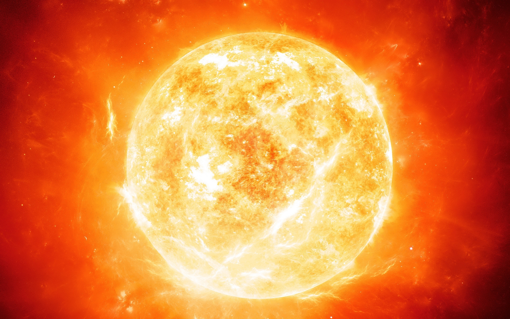

OUR SOLAR SYSTEM
The Milky Way is a barred spiral galaxy with a diameter between 100,000 and 180,000 light-years...
The Milky Way is estimated to contain 100–400 billion stars.
There are probably at least 100 billion planets in the Milky Way.
The Solar System is located within the disk, about 26,000 light-years from the Galactic Center, on the inner edge of the Orion Arm, one of the spiral-shaped concentrations of gas and dust.
The stars in the inner ˜10,000 light-years form a bulge and one or more bars that radiate from the bulge.
The very center is marked by an intense radio source, named Sagittarius A*, which is likely to be a supermassive black hole.
1. Sun

The Sun is the star at the center of the Solar System.
It is a nearly perfect sphere of hot plasma, with internal convective motion that generates a magnetic field via a dynamo process.
It is by far the most important source of energy for life on Earth.
Its diameter is about 1.39 million kilometers, i.e. 109 times that of Earth, and its mass is about 330,000 times that of Earth, accounting for about 99.86% of the total mass of the Solar System.
About three quarters of the Sun's mass consists of hydrogen (~73%); the rest is mostly helium (~25%), with much smaller quantities of heavier elements, including oxygen, carbon, neon, and iron.
2. Venus
The second planet from the sun, Venus is terribly hot, even hotter than Mercury.
The atmosphere is toxic.
The pressure at the surface would crush and kill you.
Scientists describe Venus’ situation as a runaway greenhouse effect.
Its size and structure are similar to Earth, Venus' thick, toxic atmosphere traps heat in a runaway "greenhouse effect."
Oddly, Venus spins slowly in the opposite direction of most planets.
- Discovery: Known to the ancients and visible to the naked eye
- Named for: Roman goddess of love and beauty
- Diameter: 7,521 miles (12,104 km)
- Orbit: 225 Earth days
- Day: 241 Earth days
3. Earth

The third planet from the sun, Earth is a waterworld, with two-thirds of the planet covered by ocean.
It’s the only world known to harbor life.
Earth’s atmosphere is rich in life-sustaining nitrogen and oxygen.
Earth's surface rotates about its axis at 1,532 feet per second (467 meters per second) — slightly more than 1,000 mph (1,600 kph) — at the equator. The planet zips around the sun at more than 18 miles per second (29 km per second).
- Diameter: 7,926 miles (12,760 km)
- Orbit: 365.24 days
- Day: 23 hours, 56 minutes
4. Mars

The fourth planet from the sun, is a cold, dusty place.
The dust, an iron oxide, gives the planet its reddish cast.
Mars shares similarities with Earth: It is rocky, has mountains and valleys, and storm systems ranging from localized tornado-like dust devils to planet-engulfing dust storms.
It snows on Mars. And Mars harbors water ice. Scientists think it was once wet and warm, though today it’s cold and desert-like.
Mars' atmosphere is too thin for liquid water to exist on the surface for any length of time.
Scientists think ancient Mars would have had the conditions to support life, and there is hope that signs of past life — possibly even present biology — may exist on the Red Planet.
- Discovery: Known to the ancients and visible to the naked eye
- Named for: Roman god of war
- Diameter: 4,217 miles (6,787 km)
- Orbit: 687 Earth days
- Day: Just more than one Earth day (24 hours, 37 minutes)
5. Jupiter

The fifth planet from the sun, Jupiter is huge and is the most massive planet in our solar system.
It’s a mostly gaseous world, mostly hydrogen and helium.
Its swirling clouds are colorful due to different types of trace gases.
A big feature is the Great Red Spot, a giant storm which has raged for hundreds of years.
Jupiter has a strong magnetic field, and with dozens of moons, it looks a bit like a miniature solar system.
- Discovery: Known to the ancients and visible to the naked eye
- Named for: Ruler of the Roman gods
- Diameter: 86,881 miles (139,822 km)
- Orbit: 11.9 Earth years
- Day: 9.8 Earth hours
6. Saturn
The sixth planet from the sun is known most for its rings.
When Galileo Galilei first studied Saturn in the early 1600s, he thought it was an object with three parts.
Not knowing he was seeing a planet with rings, the stumped astronomer entered a small drawing — a symbol with one large circle and two smaller ones — in his notebook, as a noun in a sentence describing his discovery.
More than 40 years later, Christiaan Huygens proposed that they were rings.
The rings are made of ice and rock. Scientists are not yet sure how they formed.
The gaseous planet is mostly hydrogen and helium. It has numerous moons.
- Discovery: Known to the ancients and visible to the naked eye
- Named for: Roman god of agriculture
- Diameter: 74,900 miles (120,500 km)
- Orbit: 29.5 Earth years
- Day: About 10.5 Earth hours
7. Uranus

The seventh planet from the sun, Uranus is an oddball.
It’s the only giant planet whose equator is nearly at right angles to its orbit — it basically orbits on its side.
Astronomers think the planet collided with some other planet-size object long ago, causing the tilt.
The tilt causes extreme seasons that last 20-plus years, and the sun beats down on one pole or the other for 84 Earth-years.
Uranus is about the same size as Neptune. Methane in the atmosphere gives Uranus its blue-green tint. It has numerous moons and faint rings.
- Discovery: 1781 by William Herschel (was thought previously to be a star)
- Named for: Personification of heaven in ancient myth
- Diameter: 31,763 miles (51,120 km)
- Orbit: 84 Earth years
- Day: 18 Earth hours
8. Neptune

The eighth planet from the sun, Neptune is known for strong winds — sometimes faster than the speed of sound.
Neptune is far out and cold. The planet is more than 30 times as far from the sun as Earth.
It has a rocky core. Neptune was the first planet to be predicted to exist by using math, before it was detected.
German astronomer Johann Galle used calculations to help find Neptune in a telescope.
Neptune is about 17 times as massive as Earth.
- Discovery: 1846
- Named for: Roman god of water
- Diameter: 30,775 miles (49,530 km)
- Orbit: 165 Earth years
- Day: 19 Earth hours